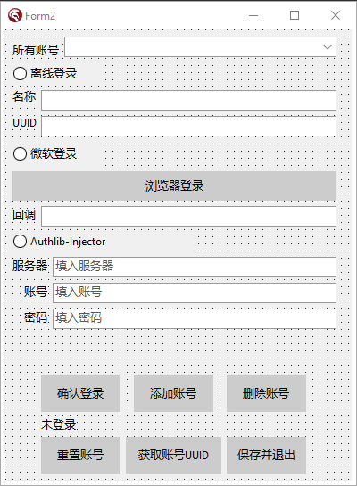

本章，我将教大家如何使用第三方外置登录。
好的，那么在这一章节，我将会给各位教学如何制作外置登录部分噢！
首先，还是让我们打开我们的官网来看看吧：点我打开外置登录Wiki官网
我们看到，Wiki官网上已经有启动器都支持了Authlib-Injector外置登录，那么我们得选择一个皮肤站作为我们率先支持的外置登录皮肤站种类噢！
我们可以先点击LittleSkin，注册一个账号可以领取1000积分噢！然后将该网址挂在一旁，我们再看向Wiki部分，我们先看向右方，有一个导航栏，让我们先点击yggdrasil服务端技术规范，点开之后，我们可以看到有个验证服务器的标识，应用这个程序其实非常简单，我们其实只需要使用几个Post网站即可啦！
首先，我们看到有个API地址，我们看到给的示例是【https://example.com/api/yggdrasil/ 】，我们先别着急点击这个网址，我们尝试一下将这个example.com改成littleskin.cn，是不是就获取到了？
那么，上述的API地址，就是我们littleskin的元数据地址啦！我们在将来的很多步骤都会需要用到这个。
启动器可以支持多个验证服务器，因此，我们在支持该服务器的时候，我们务必需要把这个服务器地址写出到外部文件去噢！但是切记，我们绝对不允许保存任何用户的账号与密码，我们只允许保存用户的access_token和refresh_token噢！【与前面的微软登录一致。】
我们还是先暂时最小化我们的浏览器，先来设定一下窗口设计吧！

大概像我这么设计就可以了噢！！由于之前的工作空间失效，因此我换了一个工作空间，这个工作空间还没做完OAuth登录，但我们只需要注意下面的Authlib=Injector登录即可！
包括下面的重置账号，这个部分我们在下一章节将改名成刷新账号，因此，不要在意这些细节……
首先还是看到我们的代码部分：
噢，对了，在这里我要提一嘴，现在开始，的Account代码块中的所有注释，都可以全部松开了，不需要再用代码注释了！！
先声明一句：以下设置的任何请求头，我会在晚点与大家细细讲述，以便各位能够
//初始化外置登录
constructor Account.InitializeAccount(sn, un, pwd, ct, id, rr: String);
var
j1, j2, j3: TJsonObject; //此处设定三个JSON变量，后面我们有用的！
begin
var rs := Concat(sn, 'api/yggdrasil/'); //注意，这里的rs变量，我们需要把参数中的sn后面拼接上该皮肤站的元数据。为什么要这么写呢？晚点等写道实现部分时再说吧！
var rstb := GetWebText(rs); //紧接着，我们再设置一个变量，为rstb，意思就是Get服务器元数据所产生的回调文本。
if rstb = '' then begin //这里，如果获取的数据为空，则需要返回一个错误信息！
messagebox(Form2.Handle, '皮肤站元数据获取失败，你似乎输入错误了服务器地址，请重试。', '皮肤站元数据获取失败', MB_ICONERROR); //返回错误信息，并且将tat设置为noneaccount。
tat := 'noneaccount';
exit;
end;
var tb := TNetEncoding.Base64.Encode(rstb); //此处将获取的皮肤站元数据的Base64编码，这个后期我们会需要用到的！
if rr = 'refresh' then //重置外置登录的if判断块。如果外置登录需要重置，则调用rr为refresh
begin
rs := Concat(rs, 'authserver/refresh'); //这里将rs重定义为添加了authserver/refresh进行刷新账号，这个我们下一章再说。
//其中，我们会发现，这里的accessToken和clientToken的参数时un和pwd，这个我们后面再解释。
var k1 := Concat('{"accessToken":"', un, '","clientToken":"', pwd, '","requestUser":false,"selectedProfile":{"id":"', ct, '","name":"', id, '"}}');
//这里设定我们的请求头，我们的请求头需要这么设计！
var t1 := Account.GetHttpy(k1, rs); //随后调用我们的GetHTTPy即可获取到返回值。
j1 := TJsonObject.ParseJSONValue(t1) as TJsonObject; //这里，我们将用户的返回值进行JSON解析，并赋值给j1。
try //以上为直接post得到后的json，然后解析json。下面为直接获取json，如果没有皮肤，则换。但绝大概率是有皮肤的。
j2 := j1.GetValue('selectedProfile') as TJsonObject; //这里，我们对j2变量进行赋值我们json解析到的，获取起selectedProfile值，并转换成json。
tun := j2.GetValue('name').Value; //然后，我们通过j2变量获取name名称。以下均保存在tat、tuu、tun、tct、tbs等中，
tuu := j2.GetValue('id').Value; //直接将tuu设定为玩家id，也就是uuid。【这点我们之后再说】
tat := j1.GetValue('accessToken').Value; //这里的accessToken就是我们的老朋友啦！
tct := j1.GetValue('clientToken').Value; //这里多了一个新的键，clientToken，我们晚点说。
tbs := tb; //元数据base64编码
except //如果未能成功获取到任意值，则直接触发报错，然后以下是我们的老朋友了！
messagebox(Form3.Handle, '不好意思，您的账户并没有皮肤，你必须前往官网换个皮之后再来。', '暂未拥有，请前往官网换皮', +MB_ICONERROR);
tat := 'noneaccount';
exit;
end;
end else begin
//请求网址，这里设定的是我们的请求登录网址，这里是直接登录的！
rs := Concat(rs, 'authserver/authenticate');
//这里设定请求头，里面我们需要使用到username，也就是un，还有pwd，clientToken等。然后别的就默认就可以了！
var k1 := Concat('{"username":"', un, '","password":"', pwd, '","clientToken":"', ct, '","requestUser":false,"agent":{"name":"Minecraft","version":1}}');
var t1 := Account.GetHttpy(k1, rs); //这里我们直接获取请求返回值
j1 := TJsonObject.ParseJSONValue(t1) as TJsonObject; //然后，这里将我们的网址返回值用JSON序列化解析一下。
try //如果邮箱与账号不匹配，则返回。
j1.GetValue('accessToken').Value; //这里必须首先判断一次是否有accesstoken出现在返回网址中，如果没有，则判定为邮箱或密码输入错误。
except //以下调用输入错误的说法。
messagebox(Form3.Handle, '输入的邮箱与密码不匹配，请重新输入！', '不匹配错误', MB_ICONERROR);
tat := 'noneaccount';
exit;
end;//查询邮箱，如果邮箱里没有皮肤，则执行
var r1 := j1.GetValue('availableProfiles') as TJsonArray; //这里是获取所有皮肤的。
if r1.Count = 0 then //如果此时，请求的返回值里的availableProfiles值为空，则说明没有去皮肤站里下载过皮肤，需要去下载一次。
begin //此处对其报错提示。
messagebox(Form3.Handle, '你还未在皮肤站中选择任何一个角色，请试图选择一个角色之后再进行登录吧！', '暂未选择角色', MB_ICONERROR);
tat := 'noneaccount';
exit;
end else if r1.Count = 1 then begin //若皮肤站内仅仅只有一个皮肤，则登录后立刻只选择这一个皮肤。
j2 := r1[0] as TJsonObject; //这里获取到上述返回值中的r1的第1个元素【在编程中，0是1号的意思】，然后
tuu := j2.GetValue('id').Value; //再获取id
tun := j2.GetValue('name').Value; //这里将tun设定为找到的玩家名称
tat := j1.GetValue('accessToken').Value; //accessToken
tct := j1.GetValue('clientToken').Value; //clientToken
tbs := tb; //元数据base64编码
end else begin //若有多个皮肤，则执行
var st := TStringBuilder.Create; //这里设置一个字符串链接
for var I := 0 to r1.Count - 1 do
begin //首先，我们定义一个for循环，这个循环根据我们获取的用户数量决定循环次数。
j2 := r1[I] as TJsonObject; //首先获取到该用户的所有用户的数组中的i个元素。
st.Append(Concat(#13#10, inttostr(I + 1), '.', j2.GetValue('name').Value)); //利用简单的字符串拼接函数，链接获取的名字与序号
end; //然后，这里写上一个输入框，提示用户设置了多个用户，需要选择登录的用户是什么。
var s := InputBox('请输入角色序号', Concat('请输入你需要登录的角色序号：', st.ToString), '');
try //这里判断用户输入的是否超出范围，如果超出了范围，则抛出报错。
if (strtoint(s) < 1) or (strtoint(s) > r1.Count) then raise Exception.Create('Format Exception');
except //抛出报错
messagebox(Form3.Handle, '不要尝试在选择角色的时候输入错误的字符！', '字符输入错误', MB_ICONERROR);
tat := 'noneaccount';
exit;
end;
j3 := r1[strtoint(s) - 1] as TJsonObject; //这里根据用户选择的序号-1获取到对应的JSON
tuu := j3.GetValue('id').Value; //这里获取到选择的uuid
tun := j3.GetValue('name').Value; //name
tat := j1.GetValue('accessToken').Value; //accessToken
tct := j1.GetValue('clientToken').Value; //clientToken
tbs := tb; //元数据base64编码
end; //最后，添加外置登录账号完毕！！为所有的tuu、tun、tat、tct、tbs
end;
end;
请各位一定要将我上面写的代码单独复制进记事本里，关掉换行来看，因为里面的注释几乎说明了目前所有的代码块用途！！
好了，然后那些Get tuu、tun、tat、tct、tbs等方法，我就不写了，大家自己补上就好，里面其实就一个简单的result := tuu或者tun等。
至于为什么要这么写呢？我们上两章微软登录，直接看wiki.vg即可，但是这一章节Authlib登录，我一定要说明一下我是从哪里看到的对Get解析的文本的！我们来看看官网对于皮肤站的请求部分吧！
众所周知，皮肤站是一个很神奇的地方，皮肤站由各个皮肤站的玩家们搭建而成，而Authlib-Injector仅仅只是对这些获取这些皮肤站，对其的AccessToken进行校验，最终返回皮肤在游戏内。
这个网址里面有说我们应该POST哪个网址才能获取到真正的元api数据！
由于该以下我已经以尽可能的写好了Push或者Get后获取的JSON数据的解析，我这里就不写那些参数/描述了，大家自己看看就好咯！！
我们首先先来看这个：
POST /authserver/authenticate
这个的意思就是我们需要POST【https://littleskin.cn/api/yggdrasil/authserver/authenticate 】，在您皮肤站api元数据后方加上POST后面的一长串即可！
请求格式与是否会包含clientToken都已经写好给你了！clientToken我们只需要重置账号时用到，因此暂时保留……记住，皮肤站的请求格式很多都是JSON形式传递，因此需要把请求头设置成application/json才行噢！
官网是这么写的：
{
"username":"邮箱（或其他凭证，详见 §使用角色名称登录）",
"password":"密码",
"clientToken":"由客户端指定的令牌的 clientToken（可选）",
"requestUser":true/false, // 是否在响应中包含用户信息，默认 false
"agent":{
"name":"Minecraft",
"version":1
}
}
其中，我们需要把这一长串压缩成一行，就是这样！
响应格式也已经给你了！
{
"accessToken":"令牌的 accessToken",
"clientToken":"令牌的 clientToken",
"availableProfiles":[ // 用户可用角色列表
// ,... 每一项为一个角色（格式见 §角色信息的序列化）
],
"selectedProfile":{
// ... 绑定的角色，若为空，则不需要包含（格式见 §角色信息的序列化）
},
"user":{
// ... 用户信息（仅当请求中 requestUser 为 true 时包含，格式见 §用户信息的序列化）
}
}
我们其实无需使用requestUser=true的。。因此没有必要……
格式它让我们详见 §角色信息的序列化，我们可以点进去看看。
{
"id":"角色 UUID（无符号）",
"name":"角色名称",
"properties":[ // 角色的属性（数组，每一元素为一个属性）（仅在特定情况下需要包含）
{ // 一项属性
"name":"属性的名称",
"value":"属性的值",
"signature":"属性值的数字签名（仅在特定情况下需要包含）"
}
// ,...（可以有更多）
]
}
大概就是这样了，其中的properties我们也无需，我们只需要获取到用户的id和name即可！
好了，那么这个就是我们的登录函数了，下面我们就来看看如何写我们的按钮点击代码了噢！
首先，我们那几个小小的Edit就暂时先不用管，我们只需要管我们那些radiobutton该怎么按下，随后我们就在添加按钮事件中处理对应的代码即可！
//添加账号的按钮
procedure TForm2.Button4Click(Sender: TObject);
begin
... //上方微软登录的部分！
end else if RadioButton3.Checked then begin //替换。如果输入网址不符，则替换。
if messagebox(Handle, '在你使用外置登录的时候，登录过程也可能会卡很久，是否要继续呢？如果登录的AccessToken与RefreshToken都过期了的话，那么点击下面的重置账号按钮即可。', '需要资源下载，是否继续？', MB_YESNO+MB_ICONINFORMATION) = 7 then exit; //这里需要给个提示，当然不给也行。。
var er: String := Edit3.Text; //这里的Edit3指的是服务器地址！
if er.IndexOf('https') = -1 then er := er.Replace('http', 'https'); //如果在服务器地址上找不到https的话，用户输出了http，则替换http成https。
if er.IndexOf('https') = -1 then er := Concat('https://', er); //如果还是找不到https，就拼接一个https上去。
er := er.Replace('api/yggdrasil/', ''); //如果用户输入了api/yggdrasil的话，则将这个替换掉！
er := er.Replace('api/yggdrasil', ''); //这里替换两次，一个是有尾缀/的，一个是没有的！
if er.LastIndexOf('/') <> er.Length - 1 then er := Concat(er, '/'); //如果网址最后一个不是【/】的话，就拼接一个【/】上去。
var uidd := GuidToString(uid).Replace('{', '').Replace('}', '').Replace('-', '').ToLower; //随机获取一个无符号uuid
label8.Caption := '正在添加外置登录'; //上述无符号uuid用作clientToken。
TTask.Run(procedure //这里使用一个任务来执行网址请求。
begin
try //使用报错判定，如果请求失败则抛出报错。
taccm := Account.InitializeAccount(er, Edit4.Text, Edit5.Text, uidd, '', 'post'); //这里将网址【大约长这样：https://littleskin.cn 】然后尾缀是post，中间有个空字符串，因为这个是后期我们重置账号时填入玩家名称用的……
//首先，在我这个教程里，可能有时候很多功能并不是最简洁的。
tat := taccm.GetThirdAccessToken; //如果构造函数执行完毕，则返回玩家AccessToken。
if tat = 'noneaccount' then exit; //如果at没有账号，则为返回方法。
tct := taccm.GetThirdClientToken; //返回ClientToken。。【说实话这个完全不用返回，大家可以直接用上面的uidd。】
tun := taccm.GetThirdUserName; //返回用户名字。
tuu := taccm.GetThirdUUID; //返回用户真实的uuid。
tbs := taccm.GetThirdBaseCode; //返回皮肤站的元数据base64编码。
except //如果抛出报错，则执行。
messagebox(Handle, pchar(Concat('你的网络连接超时了，请连接之后再进行网络请求。或者如果你连接了，重试一次即可。')), '连接超时引发的报错', MB_ICONERROR); //如果网络连接超时，则直接在Account.InitializeAccount的时候就已经触发报错。
exit; //退出函数。
end; //给Array添加元素。
(AccountJson.GetValue('account') as TJsonArray).Add(TJsonObject.Create
.AddPair('type', 'authlib-injector') //设置json。这里的话，需要保存server、name、uuid、accessToken、clientToken和元数据base64。
.AddPair('server', er)
.AddPair('name', tun)
.AddPair('uuid', tuu)
.AddPair('access_token', tat)
.AddPair('client_token', tct)
.AddPair('base_code', tbs)
); //给下拉框添加元素
ComboBox1.ItemIndex := ComboBox1.Items.Add(Concat(tun, '（外置）')); //给下拉框添加元素。
Edit3.Text := ''; //将服务器、用户账号，用户密码的三个文本框调成空。
Edit4.Text := '';
Edit5.Text := '';
messagebox(Handle, '添加成功！', '添加成功', MB_OK+MB_ICONINFORMATION); //添加成功了！
end);
end;
end;
其中噢，先给大家提个醒，我给大家的示例代码里面，并没有任何一个可以锁住控件阻止玩家下一步操作的，而且也没有给玩家任何一个提示指现在已经执行到了哪里，无论是微软登录还是外置登录，都是一样的！因此，大家需要根据自己的需求来自定义各位的启动器噢！
我还是那句老话，我写教程只提供一个思路，具体实现步骤还得看每个作者自己实现的语言！
好了好了，下面我们就要开始启动游戏了！那么我们应该如何启动呢？很简单，我们来看这里：点我看网址
这篇wiki已经详细的说出了我们在启动游戏的时候应该添加什么JVM参数，什么额外参数的！
首先，在登录的时候，我们需要引导用户去下载一个Authlib-Injector这么一个jar文件，我们也可以通过启动器将该Authlib-Injector下载到本地。这里我先暂时不演示如何通过启动器下载文件，我们将在下载部分时说道。
那么，这里我们来看wiki中启动游戏这一章节，下面有个下载Authlib-Injector，我们找到【一个API】蓝色字体，点击它即可跳转到API下载界面！同时，bmclapi也对Authlib-Injector有支持！
一个API网址里面是这么说的：
入口就是https://authlib-injector.yushi.moe/
我们仅仅只需要在下方Get后方的网址拼接到入口的后面即可！
获取最新版本【获取版本列表一般我们不用……我们会用最底下那个获取最新版本的即可！】
使用Get请求，Get到latest的网址，紧接着我们看到这里的以下：
{
"build_number": 此版本的构建号, //一个Integer数字
"version": "此版本的版本号",
"download_url": "此版本的 authlib-injector 的下载地址",
"checksums": { // 校验和
"sha256": "SHA-256 校验和"
}
}
里面有一个名为checksums的，用来检验软件hash值得，然后download_url就是我们得authlib-injector下载地址啦！！然后，我们发现这里有一个版本号，version键值，这个是版本，我们可以将其保存到外部文件，将来我们学会了用启动器下载资源的时候，我们就可以判断版本号从而使Authlib-Injector一直保持最新版本了！！
然后，我们将这个下载地址下载下来，目前暂时没有学会用启动器下载，因此，我们将下载好的文件放到【exe目录\launcher\authlib-injector】目录下，晚点我会在启动游戏时，将路径设置到此处！
下载好了吗？下载好的话，我们就要开始启动游戏了！
首先，依旧进入我们的主界面，进入我们的启动游戏逻辑中噢！
此时此刻，我们的PlayerAuth已经不为空啦！我们就可以在这个代码块里面填入一些我们想要的东西啦！
procedure TForm1.Button1Click(Sender: TJsonObject);
begin
... //前面省略
if typetemp = 'offline' then begin //如果type键等于offline，则执行。
PlayerName := chooseAbout.GetValue('name').Value; //设置为name
PlayerUUID := chooseAbout.GetValue('uuid').Value; //设置为uuid
PlayerAcTo := PlayerUUID; //accessToken等于uuid
PlayerType := 'Legacy'; //type为Legacy。
PlayerAuth := ''; //为空
end //将末尾分号去掉。
else if (typetemp = 'microsoft') or (typetemp = 'oauth') then begin
PlayerName := chooseAbout.GetValue('name').Value; //设置为name
PlayerUUID := chooseAbout.GetValue('uuid').Value; //设置为uuid
PlayerAcTo := chooseAbout.GetValue('access_token').Value; //设置为accessToken
PlayerType := 'msa'; //type为msa。
PlayerAuth := ''; //为空
end
else if (typetemp = 'authlib-injector') then begin
var basecode := chooseAbout.GetValue('base_code').Value;
var server := chooseAbout.GetValue('server').Value;
PlayerName := chooseAbout.GetValue('name').Value; //设置为name
PlayerUUID := chooseAbout.GetValue('uuid').Value; //设置为uuid
PlayerAcTo := chooseAbout.GetValue('access_token').Value; //设置为accessToken
PlayerType := 'msa'; //type为msa。
PlayerAuth := Concat('-javaagent:', GetMCRealPath(Concat(ExtractFilePath(Application.ExeName), 'launcher\authlib-injector'), '.jar'), '=', server, ' -Dauthlibinjector.yggdrasil.prefetched=', basecode);
//首先，知道为啥要这么写不？在上面的网址中说了，拼接两个jvm参数进启动参数里，这不，一个javaagent和一个prefetched。前面的我也说得很明白了，就是这样哒！
end;
... //后面省略
end;
随后，启动！！你会发现自己已经成功外置登录了！！现在先创建一个皮肤站账号，然后添加一个皮肤，畅享我们的皮肤之旅吧！！